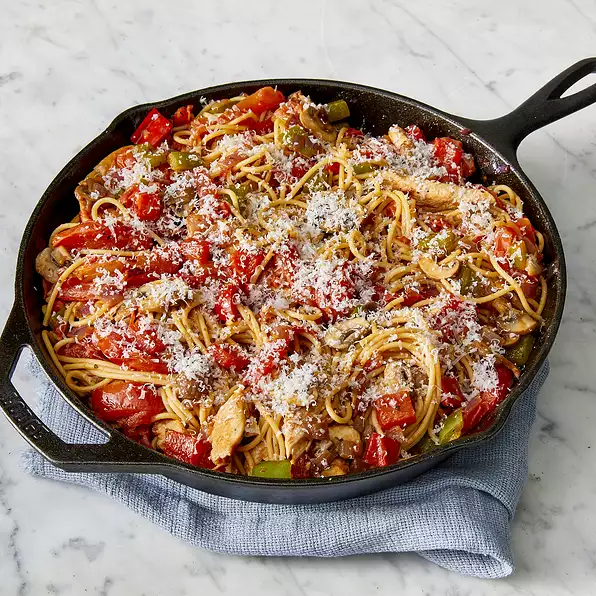

Chicken Pasta

Description
In this skillet chicken recipe is a tasteful combination of vegetables, chicken, and pasta peppered in a cast iron
skillet. My family eats tons of this stuff. This recipe takes about 10 minutes to prep, 25 minutes to cook (total 35 minutes) and it will serve 2 people.
Per serving this meal contains 768 calories; 43g protein; 62.4 carbohydrates; 40.1g fat; 74.6mg cholesterol;
524.9mg sodium
Ingredients
- 8 ounce package spaghetti
- 2 tablespoons olive oil
- 8 plum tomatoes (halved and sliced)
- 1 teaspoon garlic powder
- 2 teaspoons dried basil
- 1 pinch salt
- 1 teaspoon ground black pepper
- 1 1/2 teaspoon white sugar
- 1 tablespoon ketchup
- 2 skinless boneless chicken breats cut into thin slices
- 2 garlic cloves crushed
- 1 green bell pepper chopped
- 1 red bell pepper chopped
- 1 red onion chopped
- 1 cup sliced mushrooms
- 1/4 cup grated parmesan cheese
Steps
- Bring a large pot of water to a boil over high heat. Stir in the spaghettini, and return to a boil. Cook the pasta until it has cooked through, but is still firm to the bite, about 6-8 minutes. Drain well and keep warm.
- Heat 2 tablespoons oil in a large skillet over medium heat. Stir in the tomatoes; cook until they soften and begin to break down. Stir in the garlic powder, oregano, basil, salt, pepper, sugar, and ketchup. Heat sauce through and reserve.
- Heat the remaining 3 tablespoons oil in a separate cast iron skillet over medium heat. Stir in chicken; cook until browned. Stir in crushed garlic cloves; cook for 1 additional minute.
- Remove chicken from skillet and reserve. Turn heat to high. Stir the green pepper, red pepper, onion, and mushrooms into
the skillet and cook until they begin to soften. Stir in browned chicken. Turn heat to medium and cook until chicken is no longer pink in the center, and the vegetables are cooked through, about 5 minutes.
- Toss the chicken and vegetables with the tomato sauce and the hot pasta. Serve sprinkled with Parmesan cheese.